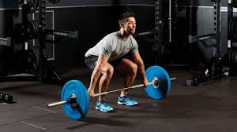

- chest
- leg
- arm
weight-trainging
Weight training is a common type of strength training
for developing the strength
and size of skeletal muscles.
It utilizes the force of gravity
in the form of weighted bars,
dumbbells or weight stacks in order to oppose the force generated
by muscle through
concentric or eccentric contraction.
Building and maintaining muscle is necessary for all of us, especially as we age.
And the earlier we start, the better.
According to the American Council on Exercise,
most adults lose nearly a half pound of muscle per year starting around age 30,
mostly because they aren’t as active as they were when they were younger.

Losing muscle at the same time that metabolism starts to slow down
is a recipe for weight gain and the health issues that can accompany it.
Building stronger muscles isn’t just about vanity, either.
According to the Mayo Clinic, strength training not only helps with weight control,
but also stops bone loss and can even build new bone.